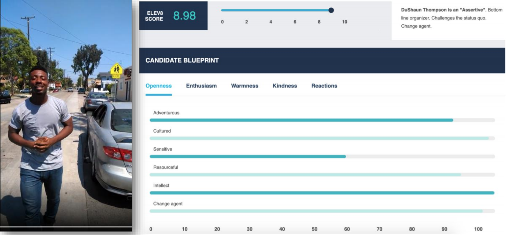
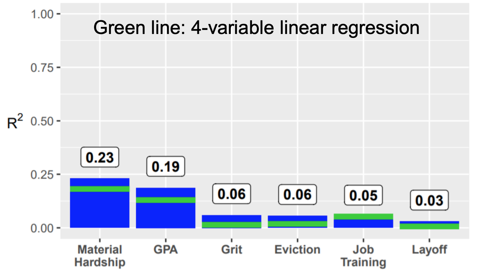

「手の込んだ乱数発生器」インチキ AI 企業に騙されないために
Posted on 2019-12-20(金) in Machine Learning
プリンストン大学准教授の Arvind Narayanan 氏による「How to recognize AI snake oil（AI のインチキの見分け方）」と題された講演がありましたので紹介します。
彼の主張は「現在、AI として売られているものの多くがインチキだ」というものです。
私自身も、スタートアップ・研究所を始め数多くのクライアントさんの「AI プロジェクト」に関わっていますが、近年のニューラル・ネットワークに代表されるAI分野の進歩に日々驚きながらも、「流行っているから」「投資を受けやすいから」という表面的な理由で「AI」という言葉を気軽に使う創業者・プロダクトの代表者などを数多く見てきました。
こういった「インチキ」は、専門家が簡単な質問をすればすぐに見破ることができるのですが、専門的な知識が無かったり、見た目の良いマーケティングやピッチ資料に紛れ込んでいたりすると、どうしても信じてしまいがちですね。
以下、講演の内容を簡単に紹介します。
ちなみに、講演タイトルにもある "snake oil" とは、「効果が無いインチキ商品、それを偽ってマーケティングすること」を指す言葉で、１９世紀にアメリカやヨーロッパで、単なる鉱油を万能薬である「ヘビの油」と称して売ることが横行したことから来ているそうです。

-
採用と AI
- 「候補者の30秒のビデオから、仕事への適正が分かる」ある実際のスタートアップ（上図）
- 常識的には不可能だと思われる。AI の専門家もそう思うだろう。
- 実際には、「手の込んだ乱数発生器」だった
- 「採用+AI」のスタートアップは、合計で100万ドル以上を調達している
- コーネル大の研究者らが、有効性を調査した論文を出している
- 「エセ AI をかいくぐる」コツがソーシャルメディアでシェアされている（例：白文字で「Oxford」や「Cambridge」を埋め込む、等）
-
エセ AI が蔓延する理由
- AI は関連したいくつかの技術分野を総称する用語
- 真に革新的な進歩があり有名になった技術もある（例: AlphaGo）
- 一般大衆にはその区別が分からない → 企業がそこに付け込む
- 米国での調査：あと10年ほどで全ての自動化が起こると信じている人が多い（一方、専門家は50年はかかると考えている）
-
AI 技術の分類
- 認知
- コンテンツ同定（Shazam、画像検索）
- 顔認識
- 医療画像診断
- 音声認識
- DeepFake
-
真の進歩
-
自動判定
- スパム検出
- 著作権で保護されたコンテンツの検出
- 自動エッセイ採点
- ヘイトスピーチの検出
- 推薦
-
改善中
-
社会的な結果の予測
- 再犯推定
- 仕事パフォーマンスの推定
- 予測的取り締まり
- テロ危険度予測
- 子供の「落ちこぼれ」予測
- 有効性に疑い → エセ AI が蔓延
- 認知

-
社会的な結果の予測は難しい
- 子供（出生から9歳になるまで）とその家族についての膨大なデータ（12,942 変数）
- 15歳の時点での社会的な結果 (9変数) を予測
- 一般的な機械学習コンペティションと同じ枠組み
- 数多くの AI/ML 研究者・学生が取り組んだのにもかかわらず、R^2 = 0.23 ほど
- R^2 = どのぐらい予測がうまく行っているか。0 = ランダム、1 = 完璧な予測
- 13,000特徴量を使った最新の「AI」も、4変数の線形回帰（100年前に発明された技術）も精度はほぼ変わらず
- 上のグラフを参照
-
再犯予測
- 137特徴量を使った「AI ツール」も、2変数ロジスティックと同程度
- 両者とも、ランダム予測よりわずかに良い程度
-
まとめ
- 社会的な結果の予測において、AI は数個の特徴量を使った手動スコアリングよりもわずかに良い程度
- 手動スコアリングは既に広く使われている（例：免許の点数システム）
- 弊害
- 個人情報の乱用
- 分野の専門家から責任の無いテック企業へのパワーバランスの変化
- 説明可能性の欠如
- 介入を困難にすることも
- 社会的な結果の予測において、AI は数個の特徴量を使った手動スコアリングよりもわずかに良い程度